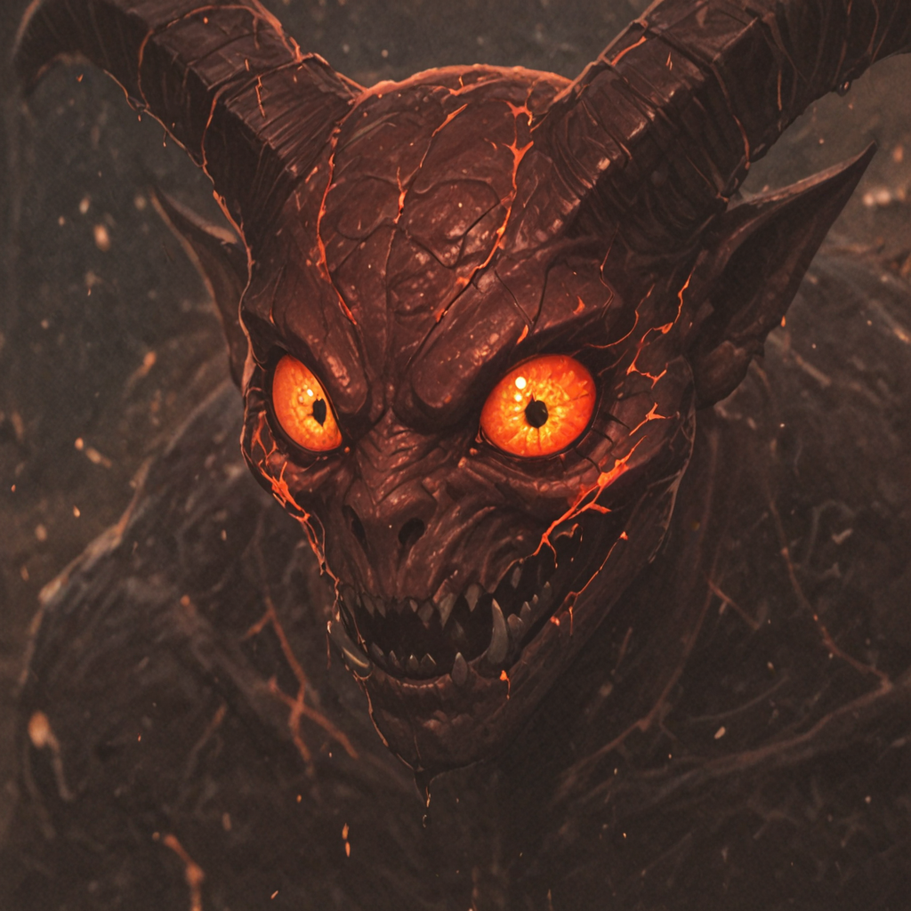
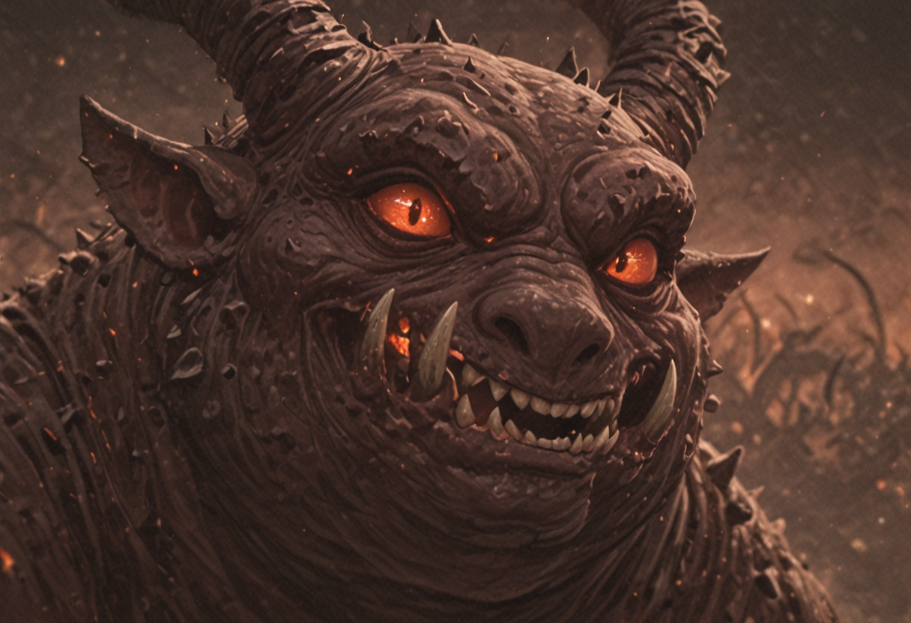
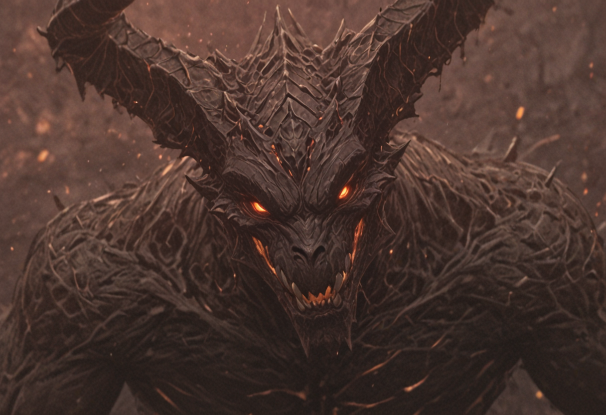
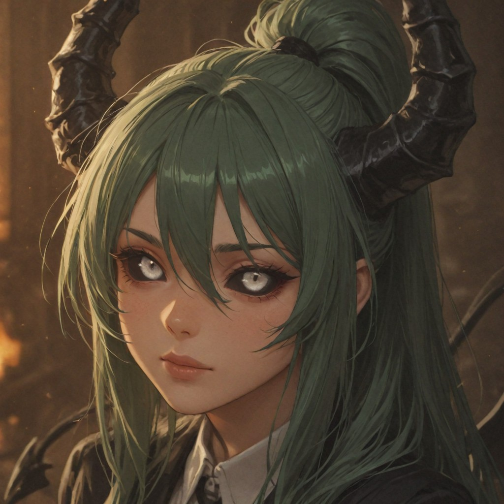
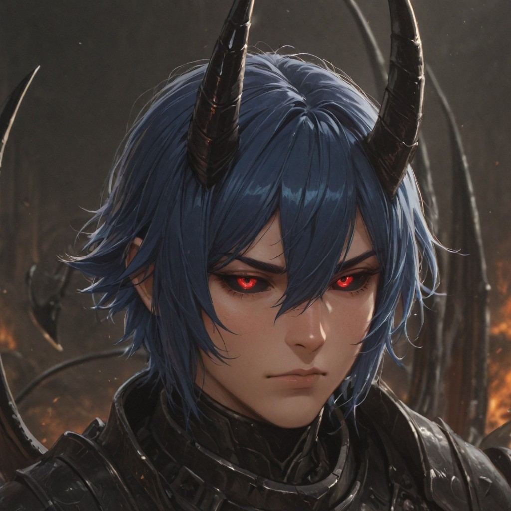

Support & Extra Units

Imp
Lesser demonic entities that populate the infernal realms. While individually weak, they overwhelm targets through sheer numerical superiority and nuisance tactics.

Fat Imp
Rather than accumulating power to evolve, some Imps simply consume resources until morbidly obese. Larger and physically stronger, yet largely unthreatening.

Stray Demon
Common denizens of the infernal underworld. Relying on their massive bulk, they deliver devastating, unrefined kinetic blows to unprotected targets.

Trainee
Entry-level corporate hires of the infernal syndicate. They possess basic proficiency in projecting low-yield localized fire spells for minor combat tasks.

Army Recruit
Standard infantry of the demonic armed forces. Typically deployed for routine perimeter defense, corporate security, and basic reconnaissance operations.

Lust Demon
Denizens of the Second Circle. While lacking raw physical prowess, they are absolute masters of psychological manipulation and mortal seduction.

Clerk
Standard administrative casters of the Syndicate. They wield reliable arcane spells but suffer severe morale and performance drops when forced to work uncompensated overtime.

Tormentor
Cruel fiends armed with traditional infernal pitchforks. They derive immense satisfaction from relentlessly agonizing their victims without granting the mercy of death.

Gluttony Demon
Massive, perpetually starving horrors from the Third Circle. Devoid of arcane capability, they rely on catastrophic physical strength and an insatiable appetite.

Manager
Mid-level department supervisors wielding advanced corporate spellcraft. Their arcane talent, experience, and ruthless efficiency justify their administrative rank.

Tormented Soul
The bound spirit of a mortal who traded their soul to the Syndicate. Deployed as a highly specialized, expendable asset against high-value targets.

Army Captain
Hardened frontline commanders of the demonic military. Serving directly under infernal nobility, they lead their squadrons with brutal tactical efficiency.

Greed Demon
Imposing entities from the Fourth Circle. Driven by insatiable avarice, they have mastered a versatile array of combat disciplines simply because they refuse to specialize, desiring all power.

Director
High-ranking executives overseeing entire infernal divisions. They conjure top-tier apocalyptic magic to rain total destruction upon corporate rivals.

Army Marshal
Supreme military tacticians commanding the private armies of hell's nobility. They blend masterful personal combat skills with brilliant strategic oversight.

Doppelganger
Apex infiltration specialists capable of perfectly mimicking any entity they observe. They have long since forgotten their original visage.

Duke
Sovereign rulers of the infernal courts. Their devastating arcane power is eclipsed only by their terrifying political influence. None dare question their decrees.

Wrath Demon
Apex engines of destruction from the Fifth Circle. Consumed by pure fury, their inability to follow complex orders restricts them to "last resort" deployment protocols.
Summon Units

Enslaved Warrior
The soul of a legendary mortal combatant wielding a massive greatsword. Having signed an infernal contract for power in life, he is now bound to eternal servitude in the afterlife.

Archdemon
An evolutionary anomaly combining the raw, apocalyptic physical strength of a demon with the cold, calculating, spell-weaving intellect of a devil.

Fallen Angel
A formerly divine entity stripped of celestial grace. They rebelled upon realizing that heaven's laws were fundamentally unjust, bringing their holy wrath to the underworld.
Executive & Hero Targets

Xuriath, The Assassin
A notorious devil who navigates the battlefield by teleporting through shadows. Unsurprisingly, he is the Syndicate's premier contractor for high-profile liquidations.

Nakira, The Female Butler
Defying traditional gender roles within the House of Duty, Nakira explicitly chose the Butler classification primarily because it legally allows her to punch adversaries to death.

Wolfy, the Puppy
A monstrous, towering wolf matching a Cerberus in scale. Whoever assigned him the official corporate designation of "Puppy" possessed a profoundly dark sense of humor.

Wohn Jock, the Professional
A legendary freelance operative wielding dual ballistic pistols with terrifying precision. His services—and his wrath—are deeply feared by rival criminal organizations.

Camus, the Incubus
The male counterpart to the succubus lineage. Possessing paralyzing aesthetic appeal, he effortlessly shatters the mental fortitude and loyalties of anyone who meets his gaze.

Delander, the Heresy Demon
An entity from the Sixth Circle who once fought in the name of the divine. After losing everything, he embraced heresy, concluding that humanity must be freed from heavenly tyranny.

Artemia, the Iron Executive Officer
The relentless leader of the Syndicate's elite task forces. Refusing the concept of sleep to ensure total productivity, she brutally forces her subordinates to meet her impossible standards.

Maurice, the Lost Paladin
Once a noble champion who traded his eternal soul for the power to save his people. Though successful, the crushing weight of his sins and eternal damnation slowly tears his spirit apart.

Cocytus, the Demon of Depths
The absolute sovereign of the lowest circle of hell, governing all matters of treachery. Cold, calculating, and overwhelmingly powerful, he serves as the infernal President's right hand.

Telasla, the Witch of Envy
An enigmatic anomaly draped in shadow. Neither demon nor devil, she is a "special guest" of the Infernal President, wielding terrifying, reality-warping magical authorities.

Lucifer, the Infernal President
The absolute sovereign and CEO of Hell. Ruling with iron-clad contracts and a whip of hellfire, he is an omniscient strategist who factors every variable to achieve ultimate corporate supremacy.